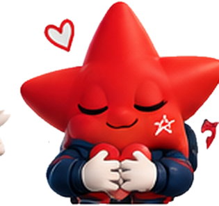
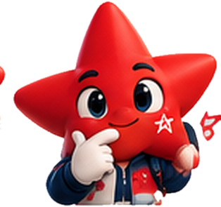
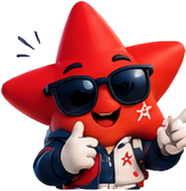
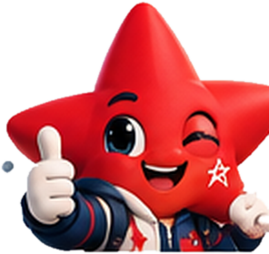
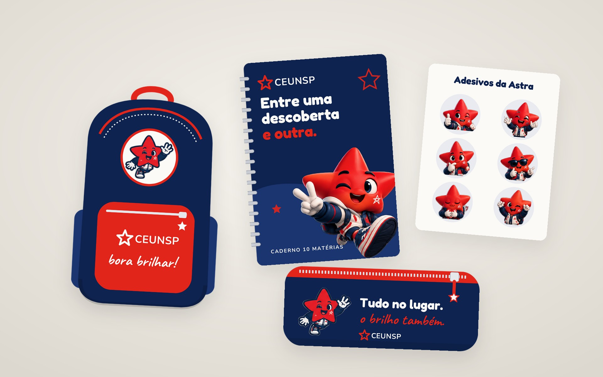
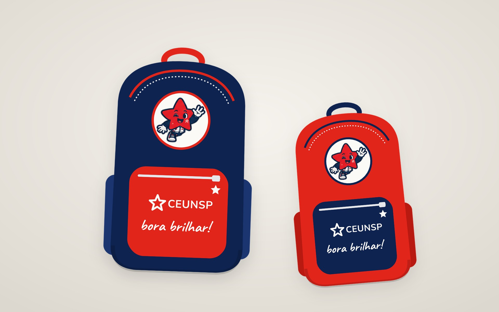
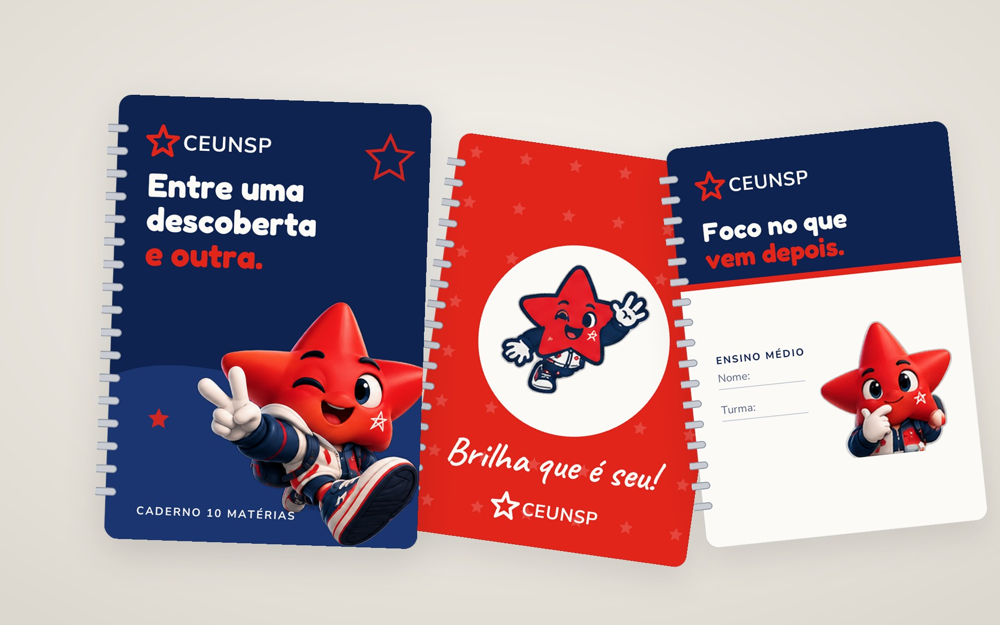
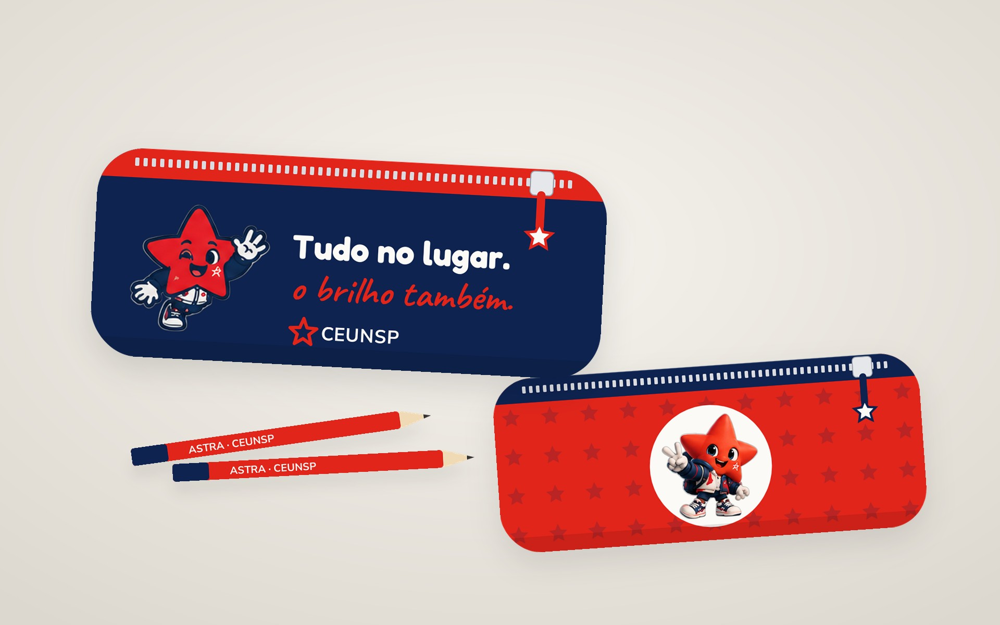
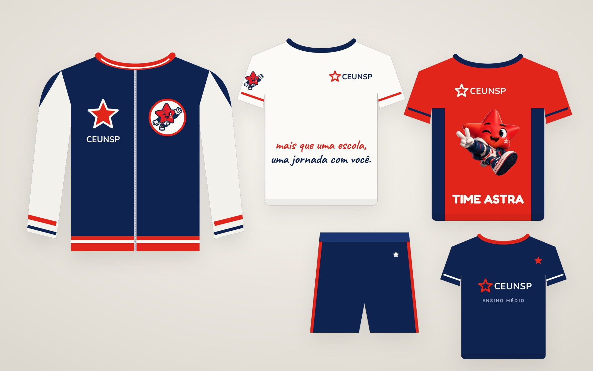
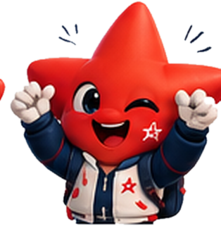

Nasce a Sociedade de Educação
O professor Rubens Anganuzzi assume a instituição, que passa a se chamar Sociedade de Educação Nossa Senhora do Patrocínio.
Itu · Salto · Matrículas 2027
a estrela que vive o CEUNSP com você.
Mais de 50 anos de tradição em educação, estrutura de campus universitário e uma comunicação que conversa de verdade com alunos e famílias.
Nossa história
O professor Rubens Anganuzzi assume a instituição, que passa a se chamar Sociedade de Educação Nossa Senhora do Patrocínio.
A faculdade é fundada no centenário da chegada das Irmãs de Chambéry, herdeiras de uma longa tradição educacional.
Uma antiga vinícola, a Milioni, começa a ser transformada em espaço de ensino.
Cerca de 130 mil m² de terreno e o antigo conjunto da fábrica ganham nova vida como espaço de ensino.
O CEUNSP passa a integrar um dos maiores grupos educacionais do país, ampliando estrutura e recursos.
A estrela do logo sai da marca e vira a Astra, parceira dos alunos na rotina, nas redes e na matrícula.
Segmentos
Primeiros passos
Um ambiente acolhedor para descobrir o mundo com curiosidade, afeto e muita mão na massa, com a família sempre por perto.

1º ao 5º ano
Alfabetização, raciocínio e autonomia ganham forma em projetos que fazem sentido para a criança, no ritmo de cada uma.

6º ao 9º ano
Mais disciplinas, mais desafios e mais protagonismo. É a fase de descobrir talentos, aprender a se organizar e trabalhar em equipe.

1ª à 3ª série
Preparação para o ENEM e vestibulares, orientação para escolhas e a vivência de um campus universitário bem ao lado.

Segmentos e turmas podem variar por unidade. Confirme a disponibilidade com a secretaria.
Por que o CEUNSP
Em Salto, o colégio fica dentro do campus do CEUNSP: espaço amplo e o ensino superior bem perto do dia a dia.
Desde 2016, parte da Cruzeiro do Sul Educacional, com a força e os recursos de um grande grupo de ensino.
Informação completa para as famílias e uma voz que conversa com o aluno, do 1º ano ao 3º do Médio.
Pais decidem e os filhos também opinam. Aqui, os dois se sentem em casa desde a primeira visita.
Prazer, Astra
Do latim, astra quer dizer estrelas. Ela nasceu da estrela que já está na marca do CEUNSP e agora acompanha a rotina dos alunos: nas aulas, nas redes, nos eventos e na matrícula.
Quiz relâmpago
Linha Astra
Material escolar, uniformes e o Kit Astra de boas-vindas. Arraste para ver.





Jornada da matrícula
Um post ou vídeo com a Astra chama atenção.
Stories, enquetes e conversa de verdade.
Visita guiada para conhecer o colégio.
E recebe o Kit Astra de boas-vindas.
Estrela boa brilha junto.
Pais perguntam
Escolha uma pergunta. Para assuntos oficiais, a secretaria confirma tudo com você.
Unidades
Praça Antônio Vieira Tavares, 73
CEP 13320-219 · Salto/SP · no campus CEUNSP
Vem pro CEUNSP
só falta você brilhar com a gente.
